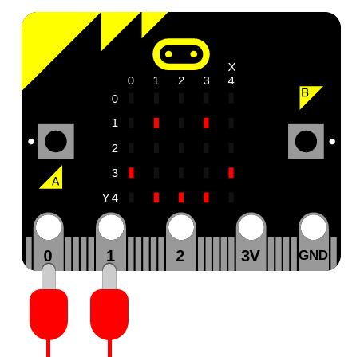

Speech¶
This module makes the micro:bit talk, sing and make other speech like sounds. By default sound output will be via the edge connector on pin 0 and the built-in speaker V2. You can connect a wired headphones or a speaker to pin 0 and GND on the edge connector to hear the sound:
Note
This work is based upon the amazing reverse engineering efforts of Sebastian Macke based upon an old text-to-speech (TTS) program called SAM (Software Automated Mouth) originally released in 1982 for the Commodore 64. The result is a small C library that we have adopted and adapted for the micro:bit. You can find out more from his homepage. Much of the information in this document was gleaned from the original user’s manual which can be found here.
The speech synthesiser can produce around 2.5 seconds worth of sound from up to 255 characters of textual input.
To access this module you need to:
import speech
We assume you have done this for the examples below.
Functions¶
-
speech.translate(words)¶ Given English words in the string
words, return a string containing a best guess at the appropriate phonemes to pronounce. The output is generated from this text to phoneme translation table.This function should be used to generate a first approximation of phonemes that can be further hand-edited to improve accuracy, inflection and emphasis.
-
speech.pronounce(phonemes, *, pitch=64, speed=72, mouth=128, throat=128, pin=pin0)¶ -
speech.pronounce(phonemes, pin=(pin_speaker, pin0)) Pronounce the phonemes in the string
phonemes. See below for details of how to use phonemes to finely control the output of the speech synthesiser. Override the optional pitch, speed, mouth and throat settings to change the timbre (quality) of the voice.As with the music module, you can use an optional argument to specify the output pin can be used to override the default of
microbit.pin0. If you have the latest micro:bit V2, you can usemicrobit.pin_speaker.
-
speech.say(words, *, pitch=64, speed=72, mouth=128, throat=128)¶ Say the English words in the string
words. The result is semi-accurate for English. Override the optional pitch, speed, mouth and throat settings to change the timbre (quality) of the voice. This is a short-hand equivalent of:speech.pronounce(speech.translate(words))
-
speech.sing(phonemes, *, pitch=64, speed=72, mouth=128, throat=128)¶ Sing the phonemes contained in the string
phonemes. Changing the pitch and duration of the note is described below. Override the optional pitch, speed, mouth and throat settings to change the timbre (quality) of the voice.
Punctuation¶
Punctuation is used to alter the delivery of speech. The synthesiser understands four punctuation marks: hyphen, comma, full-stop and question mark.
The hyphen (-) marks clause boundaries by inserting a short pause in the
speech.
The comma (,) marks phrase boundaries and inserts a pause of approximately
double that of the hyphen.
The full-stop (.) and question mark (?) end sentences.
The full-stop inserts a pause and causes the pitch to fall.
The question mark also inserts a pause but causes the pitch to rise. This works well with yes/no questions such as, “are we home yet?” rather than more complex questions such as “why are we going home?”. In the latter case, use a full-stop.
Timbre¶
The timbre of a sound is the quality of the sound. It’s the difference between
the voice of a DALEK and the voice of a human (for example). To control the
timbre change the numeric settings of the pitch, speed, mouth and
throat arguments.
The pitch (how high or low the voice sounds) and speed (how quickly the speech is delivered) settings are rather obvious and generally fall into the following categories:
Pitch:
- 0-20 impractical
- 20-30 very high
- 30-40 high
- 40-50 high normal
- 50-70 normal
- 70-80 low normal
- 80-90 low
- 90-255 very low
(The default is 64)
Speed:
- 0-20 impractical
- 20-40 very fast
- 40-60 fast
- 60-70 fast conversational
- 70-75 normal conversational
- 75-90 narrative
- 90-100 slow
- 100-225 very slow
(The default is 72)
The mouth and throat values are a little harder to explain and the following descriptions are based upon our aural impressions of speech produced as the value of each setting is changed.
For mouth, the lower the number the more it sounds like the speaker is talking without moving their lips. In contrast, higher numbers (up to 255) make it sound like the speech is enunciated with exagerated mouth movement.
For throat, the lower the number the more relaxed the speaker sounds. In contrast, the higher the number, the more tense the tone of voice becomes.
The important thing is to experiment and adjust the settings until you get the effect you desire.
To get you started here are some examples:
speech.say("I am a little robot", speed=92, pitch=60, throat=190, mouth=190)
speech.say("I am an elf", speed=72, pitch=64, throat=110, mouth=160)
speech.say("I am a news presenter", speed=82, pitch=72, throat=110, mouth=105)
speech.say("I am an old lady", speed=82, pitch=32, throat=145, mouth=145)
speech.say("I am E.T.", speed=100, pitch=64, throat=150, mouth=200)
speech.say("I am a DALEK - EXTERMINATE", speed=120, pitch=100, throat=100, mouth=200)
Phonemes¶
The say function makes it easy to produce speech - but often it’s not
accurate. To make sure the speech synthesiser pronounces things
exactly how you’d like, you need to use phonemes: the smallest
perceptually distinct units of sound that can be used to distinguish different
words. Essentially, they are the building-block sounds of speech.
The pronounce function takes a string containing a simplified and readable
version of the International Phonetic Alphabet and optional annotations to indicate
inflection and emphasis.
The advantage of using phonemes is that you don’t have to know how to spell! Rather, you only have to know how to say the word in order to spell it phonetically.
The table below lists the phonemes understood by the synthesiser.
Note
The table contains the phoneme as characters, and an example word. The example words have the sound of the phoneme (in parenthesis), but not necessarily the same letters.
Often overlooked: the symbol for the “H” sound is /H. A glottal stop
is a forced stoppage of sound.
SIMPLE VOWELS VOICED CONSONANTS
IY f(ee)t R (r)ed
IH p(i)n L a(ll)ow
EH b(e)g W a(w)ay
AE S(a)m W (wh)ale
AA p(o)t Y (y)ou
AH b(u)dget M Sa(m)
AO t(al)k N ma(n)
OH c(o)ne NX so(ng)
UH b(oo)k B (b)ad
UX l(oo)t D (d)og
ER b(ir)d G a(g)ain
AX gall(o)n J (j)u(dg)e
IX dig(i)t Z (z)oo
ZH plea(s)ure
DIPHTHONGS V se(v)en
EY m(a)de DH (th)en
AY h(igh)
OY b(oy)
AW h(ow) UNVOICED CONSONANTS
OW sl(ow) S (S)am
UW cr(ew) SH fi(sh)
F (f)ish
TH (th)in
SPECIAL PHONEMES P (p)oke
UL sett(le) (=AXL) T (t)alk
UM astron(om)y (=AXM) K (c)ake
UN functi(on) (=AXN) CH spee(ch)
Q kitt-en (glottal stop) /H a(h)ead
The following non-standard symbols are also available to the user:
YX diphthong ending (weaker version of Y)
WX diphthong ending (weaker version of W)
RX R after a vowel (smooth version of R)
LX L after a vowel (smooth version of L)
/X H before a non-front vowel or consonant - as in (wh)o
DX T as in pi(t)y (weaker version of T)
Here are some seldom used phoneme combinations (and suggested alternatives):
PHONEME YOU PROBABLY WANT: UNLESS IT SPLITS SYLLABLES LIKE:
COMBINATION
GS GZ e.g. ba(gs) bu(gs)pray
BS BZ e.g. slo(bz) o(bsc)ene
DS DZ e.g. su(ds) Hu(ds)son
PZ PS e.g. sla(ps) -----
TZ TS e.g. cur(ts)y -----
KZ KS e.g. fi(x) -----
NG NXG e.g. singing i(ng)rate
NK NXK e.g. bank Su(nk)ist
If you use anything other than the phonemes described above, a ValueError
exception will be raised. Pass in the phonemes as a string like this:
speech.pronounce("/HEHLOW") # "Hello"
The phonemes are classified into two broad groups: vowels and consonants.
Vowels are further subdivided into simple vowels and diphthongs. Simple vowels don’t change their sound as you say them whereas diphthongs start with one sound and end with another. For example, when you say the word “oil” the “oi” vowel starts with an “oh” sound but changes to an “ee” sound.
Consonants are also subdivided into two groups: voiced and unvoiced. Voiced consonants require the speaker to use their vocal chords to produce the sound. For example, consonants like “L”, “N” and “Z” are voiced. Unvoiced consonants are produced by rushing air, such as “P”, “T” and “SH”.
Once you get used to it, the phoneme system is easy. To begin with some spellings may seem tricky (for example, “adventure” has a “CH” in it) but the rule is to write what you say, not what you spell. Experimentation is the best way to resolve problematic words.
It’s also important that speech sounds natural and understandable. To help with improving the quality of spoken output it’s often good to use the built-in stress system to add inflection or emphasis.
There are eight stress markers indicated by the numbers 1 - 8. Simply
insert the required number after the vowel to be stressed. For example, the
lack of expression of “/HEHLOW” is much improved (and friendlier) when
spelled out “/HEH3LOW”.
It’s also possible to change the meaning of words through the way they are stressed. Consider the phrase “Why should I walk to the store?”. It could be pronounced in several different ways:
# You need a reason to do it.
speech.pronounce("WAY2 SHUH7D AY WAO5K TUX DHAH STOH5R.")
# You are reluctant to go.
speech.pronounce("WAY7 SHUH2D AY WAO7K TUX DHAH STOH5R.")
# You want someone else to do it.
speech.pronounce("WAY5 SHUH7D AY2 WAO7K TUX DHAH STOHR.")
# You'd rather drive.
speech.pronounce("WAY5 SHUHD AY7 WAO2K TUX7 DHAH STOHR.")
# You want to walk somewhere else.
speech.pronounce("WAY5 SHUHD AY WAO5K TUX DHAH STOH2OH7R.")
Put simply, different stresses in the speech create a more expressive tone of voice.
They work by raising or lowering pitch and elongating the associated vowel sound depending on the number you give:
- very emotional stress
- very emphatic stress
- rather strong stress
- ordinary stress
- tight stress
- neutral (no pitch change) stress
- pitch-dropping stress
- extreme pitch-dropping stress
The smaller the number, the more extreme the emphasis will be. However, such stress markers will help pronounce difficult words correctly. For example, if a syllable is not enunciated sufficiently, put in a neutral stress marker.
It’s also possible to elongate words with stress markers:
speech.pronounce("/HEH5EH4EH3EH2EH2EH3EH4EH5EHLP.”)
Singing¶
It’s possible to make MicroPython sing phonemes.
This is done by annotating a pitch related number onto a phoneme. The lower the number, the higher the pitch. Numbers roughly translate into musical notes as shown in the diagram below:

Annotations work by pre-pending a hash (#) sign and the pitch number in
front of the phoneme. The pitch will remain the same until a new annotation
is given. For example, make MicroPython sing a scale like this:
solfa = [
"#115DOWWWWWW", # Doh
"#103REYYYYYY", # Re
"#94MIYYYYYY", # Mi
"#88FAOAOAOAOR", # Fa
"#78SOHWWWWW", # Soh
"#70LAOAOAOAOR", # La
"#62TIYYYYYY", # Ti
"#58DOWWWWWW", # Doh
]
song = ''.join(solfa)
speech.sing(song, speed=100)
In order to sing a note for a certain duration extend the note by repeating vowel or voiced consonant phonemes (as demonstrated in the example above). Beware diphthongs - to extend them you need to break them into their component parts. For example, “OY” can be extended with “OHOHIYIYIY”.
Experimentation, listening carefully and adjusting is the only sure way to work out how many times to repeat a phoneme so the note lasts for the desired duration.
How Does it Work?¶
The original manual explains it well:
First, instead of recording the actual speech waveform, we only store the frequency spectrums. By doing this, we save memory and pick up other advantages. Second, we […] store some data about timing. These are numbers pertaining to the duration of each phoneme under different circumstances, and also some data on transition times so we can know how to blend a phoneme into its neighbors. Third, we devise a system of rules to deal with all this data and, much to our amazement, our computer is babbling in no time.
—S.A.M. owner’s manual.
The output is piped through the functions provided by the audio module and,
hey presto, we have a talking micro:bit.
Example¶
"""
speech.py
~~~~~~~~
Simple speech example to make the micro:bit say, pronounce and sing
something. This example requires a speaker/buzzer/headphones connected
to P0 and GND,or the latest micro:bit device with built-in speaker.
"""
import speech
from microbit import sleep
# The say method attempts to convert English into phonemes.
speech.say("I can sing!")
sleep(1000)
speech.say("Listen to me!")
sleep(1000)
# Clearing the throat requires the use of phonemes. Changing
# the pitch and speed also helps create the right effect.
speech.pronounce("AEAE/HAEMM", pitch=200, speed=100) # Ahem
sleep(1000)
# Singing requires a phoneme with an annotated pitch for each syllable.
solfa = [
"#115DOWWWWWW", # Doh
"#103REYYYYYY", # Re
"#94MIYYYYYY", # Mi
"#88FAOAOAOAOR", # Fa
"#78SOHWWWWW", # Soh
"#70LAOAOAOAOR", # La
"#62TIYYYYYY", # Ti
"#58DOWWWWWW", # Doh
]
# Sing the scale ascending in pitch.
song = ''.join(solfa)
speech.sing(song, speed=100)
# Reverse the list of syllables.
solfa.reverse()
song = ''.join(solfa)
# Sing the scale descending in pitch.
speech.sing(song, speed=100)